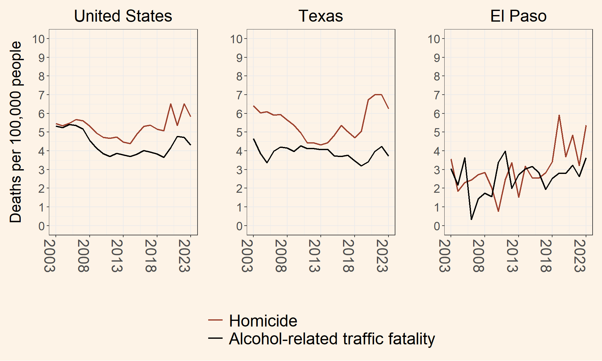

How many people drink and drive in El Paso, Texas?
In the year 2023, over 700,000 people were arrested in the United States for driving under the influence.1 Although the number seems high, most people recognize DWI arrests only represent people who were caught—the tip of the iceberg. But just how much of the iceberg are we seeing? In total, how many people drink and drive? According to a national survey that same year, an estimated 15.6 million people admitted they drove under the influence.2 That means law enforcement agencies arrested about 4.8% of the offending population. Keep in mind, however, that the 15.6 million people who admitted to drunk driving are being counted only once (they were asked if they ever drank and drove, not how many times they did it during the year). Data from another national survey was able uncover the frequency of drunk driving, estimating the total number of drunk driving episodes in a year could be as high as 256 million.3 Using this number changes the proportion of people arrested for drunk driving, from 4.8% to less than one percent (0.29%). As a country, we know the iceberg is more of a colossal ice mountain, and if we use DWI arrests as our measure of how big it is, we are severely underestimating the magnitude of the problem.
1 There were 752,449 people arrested for driving under the influence. Arrest counts can be found on the Federal Bureau of Investigation’s Crime Data Explorer.
2 The survey is called the National Survey on Drug Use and Health. The survey item measuring drunk driving is During the past 12 months, have you driven a vehicle while under the influence of alcohol?. The data can now be quiered online using this link.
3 The estimate comes from a report by the Centers for Disease Control and Prevention (CDC)
Turning now to the Sun City, how does El Paso compare to these national estimates? How many El Pasoans drove drunk last year? How many times? Does the El Paso Police Department (EPPD) arrest 1, 4, or 8% of the people drunk driving in the city? The answer is no one knows. There has never been a city-wide effort to estimate the prevalence of drunk driving. That means the DWI arrests reported each week by the EPPD do not tell us just how much of the iceberg we are seeing. So what does DWI arrests tell us?
DWI arrests tell us more about the response to the problem than the problem itself. Changes in arrests reflect changes in enforcement activity, not the behavior we seek to change. Understanding the difference between DWI arrests and DWI behavior is important, as both are often confused with one another. To help explain the difference, take the following example: imagine a police department doubled their capacity for DWI arrests, increasing from 30 arrests in one week to 60 arrests the following week. Does this increase mean twice as many people were out drinking and driving? Not necessarily. In fact, DWI arrests is not the right information we need to answer this question because we have no idea how many people were actually out drinking and driving. What we do know in this example is the police department doubled their number of arrests in one week. The reasons for the increase might be explained by increased staffing or having patrol officers dedicating more time to traffic enforcement. In these cases, the offending population could have remained the same, while the enforcement activity by the department increased. On the other hand, if DWI arrests decreased from 60 to 45, again, it would not necessarily mean that less people were drunk driving. The decrease may be explained by the same reasons just mentioned.
By now, it should be clear that DWI behavior is the problem we are concerned with changing; we hope that fewer people will be driving intoxicated. But if DWI arrests is not a good measure of the problem, what is? Well, the survey mentioned earlier proposes one solution: just ask people if and how often they drive drunk. Now, you might be thinking, Hold on. I don’t remember being asked by someone if I drove drunk last year. Those survey numbers can’t be correct; how do they know? The answer might sound unusual: the researchers who administered the survey didn’t actually ask all 300 million Americans about drunk driving; they only asked about 70,000 (You read that right). The reason they do not survey everyone is because it’s expensive, and they don’t have to (it’s not because they’re lazy or stubborn). Researchers only need to use a little bit of statistics to figure out how many people in a population are needed to obtain what is called a representative sample: a group of people that reflect the population they are interested in studying. For example, when the presidential election approaches, many voters have already made up their mind on who to vote for. Rather than wait, some researcher companies, such as Gallup, will randomly select a group of people in a city or state and ask if they are voting for candidate A or candidate B. The results of their survey give a proportion (e.g., 46% said candidate A and 54% said candidate B). Using a simple statistical technique, the researchers calculate what is called a margin of error to show how certain or trustworthy their estimate is (looks something like this: \(\pm\) 2%). If their margin of error calculated to plus and minus 2 percent, then they would make the following statement: “We estimate that 44 to 48% of the population will vote for candidate A, and 52 to 56% of the population will vote for candidate B”. Pretty cool right?
Surveying 70,000 people is appropriate for estimating a variety of characteristics across an entire country. For a city of less than 700,000 people, however, far less people are needed. Although the minimum size of the sample is determined by several factors and requires careful planning, it is not unusual for researchers to find they only need 600 people to make useful estimations. For example, imagine a city-wide survey was conducted in El Paso, and the researchers asked participants about their drunk driving behavior, as well as other questions that could be useful. At the end of that effort, we can have the ability to say “This is our estimate of how many people admitted to DWI in the year 2026.” Conducting this kind of survey on a yearly basis gives us data over time, which tells us not only how big the problem is but how it is changing. Although conducting a survey would require a little bit of funding, the effort would give us, as a city, a more objective measure of the DWI problem. No longer would the DWI problem be a myth, but a studied problem that we know is either getting worse, staying the same, or hopefully getting better.
Measuring DWI in El Paso
In this section, I describe three strategies for measuring the prevalence of drunk driving: self-report survey data, vehicle crash data, and roadside specimen testing.
Self-Report Data
As mentioned earlier, several national efforts use self-report data to measure the scope of social problems, DWI being one of them. Two concerns with this approach, however, are social desirability bias and measurement error. Social desirability bias is the idea that people tend to behave or present themselves in a manner that is viewed favorably by others (cite). In this case, a person who regularly drinks and drives may choose to under report their behavior if asked in-person by an interviewer (cite). If enough people biased their responses this way, then the prevalence of drunk driving in a jurisdiction is arguably underestimated (i.e., more people drink and drive than what the data suggests). While anonymous online surveys typically circumvent this problem, face-to-face interviews have to tread carefully or even get a little creative with how they ask potentially sensitive questions (cite).
The other concern, measurement error, is the intuitive idea that some people may not remember how many beers they had in the past thirty days (Can you remember with confidence how many cups of coffee you drank in the past thirty days?). This criticism is a big one because there is a plausible argument that the data is untrustworthy. However, prior researchers have developed ways to minimize this problem: by using multiple items that tap into the behaviors they are trying to estimate (cite). In brief, this means that instead of using one question, five similarly worded questions are used to measure the same behavior. If these five questions are answered in a similar manner, then one can make the argument that they are reliably tapping into the behavior they purport to measure. A statistician can calculate reliability metrics to show how well the questions are doing and even identify ones that are not being answered in a consistent manner. To address memory recall, some surveys will incorporate “anchoring” to (e.g., “I want you to take a moment to recall a time you [drove while intoxicated]. The following questions are about that time”).
Altogether, directly asking someone about their drinking behavior will always be a subjective measurement of the problem, but with careful planning, it can have reliability and validity. An important step is to pilot test the survey instrument and analyze the data to see what questions need to be addressed before the survey is rolled out.
Vehicle Crash Data
The second method of measuring DWI in a jurisdiction is to use vehicle crash data. Vehicle crash data are reports systematically collected by law enforcement agencies in the event of a single or multiple vehicle-involved collision. Although not all vehicle accidents get reported (cite the statute for damage conditions), those resulting in injury or death have been collected for several decades. Moreover, the ultimate outcome of DWI—what everyone is trying to prevent—is the drunk driver who crashes. This means vehicle crash data is one of the most objective, readily available measures of the DWI problem. Historically, we can look back to as early as the 1970s to see how prevalent traffic fatalities involving alcohol were and compare them to today.
?@fig-crash-history shows the rate of traffic fatalities and alcohol-involved traffic fatalities in El Paso, Texas from XXXX to 2023. The data from 2003 to 2023 are available at the [agency’s] website (link). For the data prior to 2003, I reviewed archived motor vehicle reports located online at [UNT library].
As we can see, [describe the trends].
Roadside Specimen Testing
As shown in Figure 1, alcohol-related traffic fatalities and homicide rates follow different long-term patterns across the United States, Texas, and El Paso.
Characteristics of People Who Drank and Crashed
[Check back ]